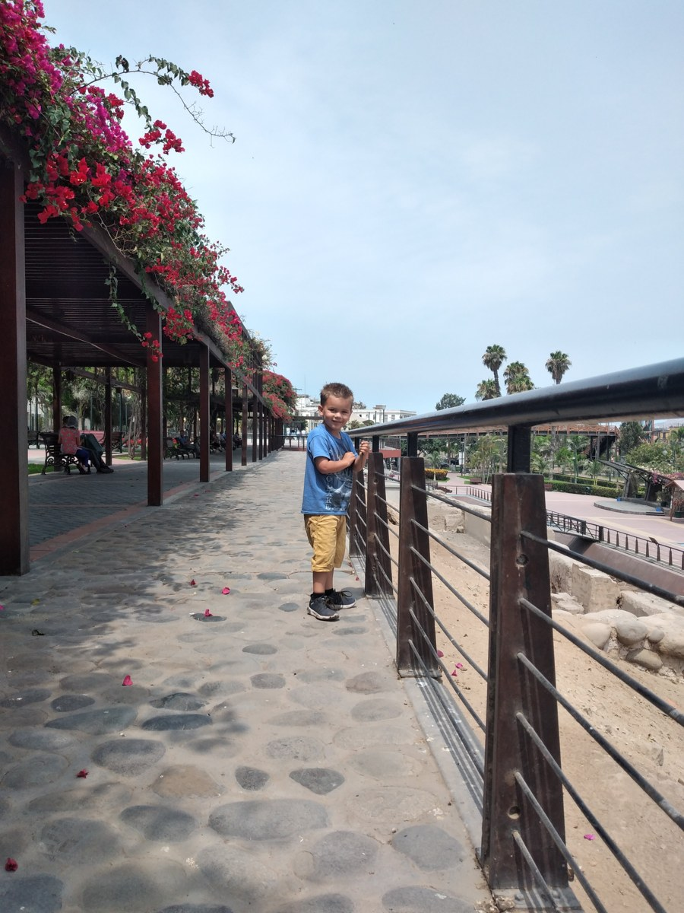

Building a Better Future for Adults With Disabilities in Paraguay
How families can distinguish a hopeful vision from dependable, accountable support.

On our first trip to Lima in 2022, Sam and I visited the area around the Plaza de Armas. The beautiful, wide walkways made the space feel welcoming and peaceful. It’s a reminder that thoughtful design matters. As we imagine Casa de Sam, we’re looking to learn from dementia communities and other special needs organizations: things like creating circular paths rather than walkways that end abruptly. Small choices made from the beginning can help create a place that feels comfortable to explore and call home.
A better future for adults with disabilities in Paraguay requires practical work that can be checked: adults helping shape services, clear information about available support, dependable staff, sustainable funding, and ways to raise concerns safely. A promising building or an ambitious opening date cannot answer those questions on its own.
Families should be able to ask what a project will actually provide, who it will serve, how decisions will be made, and what evidence will show that it improves people's lives. The same questions apply to public initiatives, private services, and proposed projects such as Casa de SAM.
This article offers a way to evaluate progress. It is not a claim that one organisation can solve a national challenge.
Start by listening to adults, including those who communicate differently
A consultation should reach beyond the people who can attend a meeting and speak comfortably in it. Adults may need accessible information, a familiar communication partner, photographs of options, a quieter setting, or several conversations to consider a choice.
Families and experienced supporters have valuable knowledge. Their views should be recorded alongside the person's preferences, with differences made visible rather than quietly resolved in favor of the easiest answer. If someone interprets a gesture or behavior, note that it is an interpretation and look for further confirmation.
A project can make this practical by reporting what people asked for, what changed as a result, and what remains unresolved. Protect personal information when sharing that account. A useful public summary can describe a design change without publishing an adult's diagnosis or private family circumstances.
Participation should continue after a service begins. People need ways to influence everyday life, not just an invitation to comment on a finished plan.
Find the actual gap before proposing the solution
A community may need help with transport, personal assistance, accessible healthcare, daytime participation, housing, or several of these together. Those needs should be investigated separately.
A practical assessment asks what help is needed, where it is needed, when it is needed, and which existing services might already cover part of it. It also asks who is missing from the discussion. Travel cost, communication barriers, or a need for continuous support may keep some adults and families out of an ordinary consultation.
Public information should distinguish between confirmed capacity, a waiting list, a pilot, and an aspiration. Counting a referral as a person receiving support can hide an unfinished task. Counting a planned service as an existing option can mislead families making immediate decisions.
Paraguay is not starting from nothing. In its May 2026 account of autism-policy work, the Ministry of Health described progress and identified adult care models and family support as continuing challenges. This is relevant evidence about autism policy, not a complete assessment of all disability services or every adult's experience.
Set milestones that mean something to families
An accountable proposal needs more than a final opening goal. Families can look for evidence in five areas:
- Service scope: which tasks and support hours are proposed, who may benefit, and which needs would require another provider.
- People: how workers will be recruited, trained, supervised, retained, and replaced when absent.
- Rights and safeguarding: how adults will make choices, maintain privacy, raise concerns, and obtain help outside the organisation.
- Operating costs: realistic staffing, transport, maintenance, food, administration, and contingency costs, not just construction costs.
- Readiness: applicable local approvals, safe systems, clear agreements, and evidence that the service can deliver what it describes.
A milestone might be a completed staffing model with backup coverage and costs. Another might be a tested accessible complaints process. These can be less visually exciting than a building photograph, but they tell families more about what daily life could be like.
Some information will remain uncertain early in planning. Responsible communication identifies the uncertainty, who is working on it, and what must happen before anyone can rely on a promise.
Use rights as a design requirement
The UN Committee's guidance on Article 19 of the disability-rights Convention sets out choice in living arrangements and access to support for community inclusion. It does not make having little or no assistance a condition of belonging.
For a proposed home, useful questions include: Can residents influence who supports them? Can they maintain relationships outside the service? How will privacy be protected when someone needs personal care? What happens when a person disagrees with a rule or wants to leave?
The UN Committee's 2023 observations on Paraguay, particularly paragraphs 35-36, provide a dated reference for concerns and recommendations about community living. They should inform scrutiny of future plans, not be presented as an endorsement of a particular residential model or proof that conditions are unchanged today.
A proposal should also seek qualified Paraguayan advice about the laws and requirements that apply to its actual service. A foreign model or a general rights statement is not a substitute for that work.
Measure a better life, not just a fuller timetable
Occupancy, activity counts, and appointments can show what an organisation does. They do not establish whether adults have more choice or a more satisfying life.
Evaluation can ask whether people receive the assistance they were promised, can communicate concerns, maintain important relationships, and participate in activities they choose. It should also look at missed support, staff turnover, unresolved complaints, and what happens after something goes wrong.
The adult's own experience belongs at the centre of this assessment. A relative's reassurance is valuable, but it cannot replace the person's preferences. For someone who does not use speech, evaluation needs a thoughtful communication approach rather than an assumption that silence means agreement.
An honest report includes limitations and changes made in response. It does not need to expose anyone's private life to show that a problem was addressed.
What You Can Do This Week
- Choose one service or proposal you are considering and ask what is operating now versus planned.
- Ask the adult which two aspects of daily life matter most to them.
- Use those priorities to select three questions from the milestone list above.
- Keep a short record of confirmed answers and unresolved questions.
- Choose a date to revisit the information instead of treating an early promise as a permanent fact.
For practical questions about a specific living arrangement, read The Need for Adult Autism Housing in Paraguay. The Casa de SAM philosophy and long-term timeline explain the project's intentions and planning horizon.
What this means for Casa de SAM
Casa de SAM is in the planning and organisational stage. It is intended to become a lifelong residential community in Paraguay for adults with developmental disabilities who need ongoing support, with a long-term opening goal of 2035. It is not currently operating, is not yet a registered nonprofit, and is not accepting donations.
That description must stay clear while planning develops. A future goal is not an admission offer, a guaranteed opening date, or a service a family can rely on today. The work ahead needs to earn confidence through practical detail, meaningful participation, and evidence that rights and dependable support can be delivered together.
Information reviewed November 10, 2026. This article offers general planning and evaluation guidance, not legal, financial, benefits, or medical advice. Verify current services and seek qualified local advice before relying on a proposal or signing an agreement.